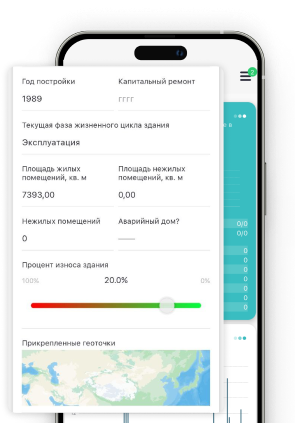
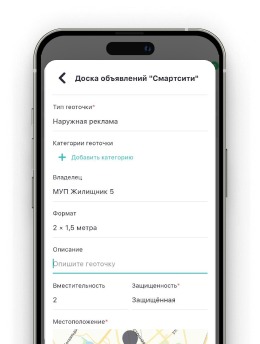
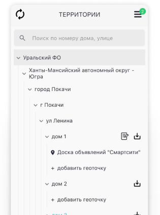
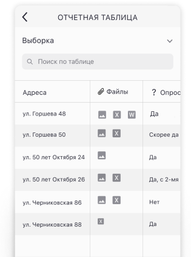
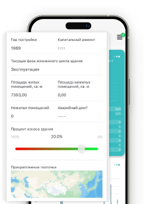
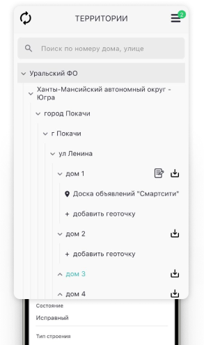
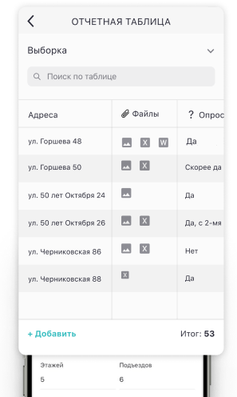

У вас отключен JavaScript. Это пугает.
О программе
Политика конфиденциальности
Сотрудничество и техподдержка:
info@pbsw.ru
Орговик
Приложение для таск-менеджмента: постановка, выполнение и контроль групповых задач любых типов.
Скачать приложение
Постановка и выполнение задач
Создавать групповые задачи любых типов
Гибкая настройка алгоритма выполнения работ Исполнителями при постановке групповых задач
Возможность автоматической постановки задач по произвольным выборкам адресов, территорий, контрагентов
Возможность автоматической постановки задач по произвольным выборкам адресов, территорий, контрагентов
Возможность автоматически ставить групповые задачи с любым количеством Исполнителей
Автоматический сбор отчетов по результатам выполнения задач

Планирование проектов и работ
Осуществлять календарное планирование работ в удобном таск-трекере
Контроль задач
Контроль работы Исполнителей с помощью геоточек, с выводом на Карту
Автоматическая фиксация даты и времени выполнения работ
Фото отчеты

Паспортизация территорий
Удобный функционал для описания территориальных объектов по различным параметрам, для целей мониторинга и паспортизации территорий
Возможность создавать геоточки с привязкой к Карте для последующей постановки задач Исполнителям для работы в данных точках


Постановка и выполнение задач
Создавать групповые задачи любых типов
Гибкая настройка алгоритма выполнения работ Исполнителями при постановке групповых задач
Возможность автоматической постановки задач по произвольным выборкам адресов, территорий, контрагентов
Возможность автоматической постановки задач по произвольным выборкам адресов, территорий, контрагентов
Возможность автоматически ставить групповые задачи с любым количеством Исполнителей
Автоматический сбор отчетов по результатам выполнения задач
Планирование проектов и работ
Осуществлять календарное планирование работ в удобном таск-трекере
Контроль задач
Контроль работы Исполнителей с помощью геоточек, с выводом на Карту
Автоматическая фиксация даты и времени выполнения работ
Фото отчеты

Паспортизация территорий
Удобный функционал для описания территориальных объектов по различным параметрам, для целей мониторинга и паспортизации территорий
Возможность создавать геоточки с привязкой к Карте для последующей постановки задач Исполнителям для работы в данных точках

